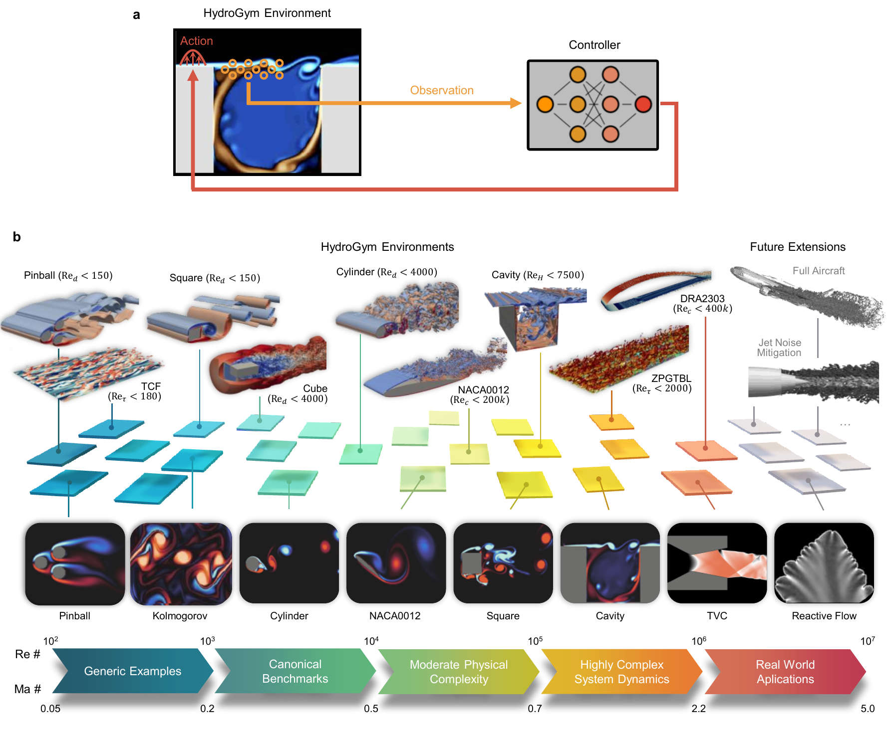

Nature · 2026
HydroGym
Does a flow-control strategy still work when the geometry or speed changes? We built HydroGym so researchers can test that question across more than 60 validated simulations, from laminar wakes to turbulent wing boundary layers.
Read the Nature paper
